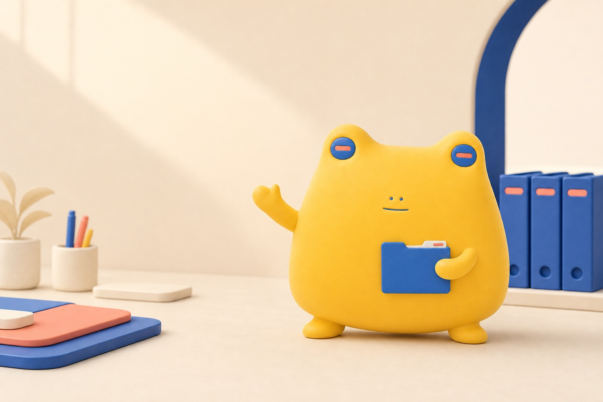
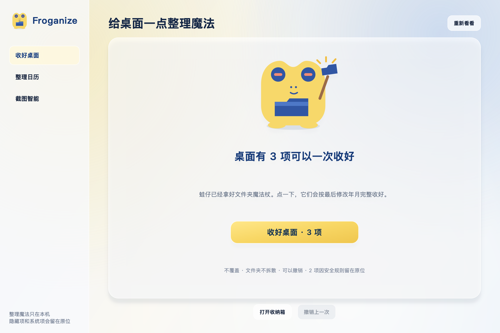
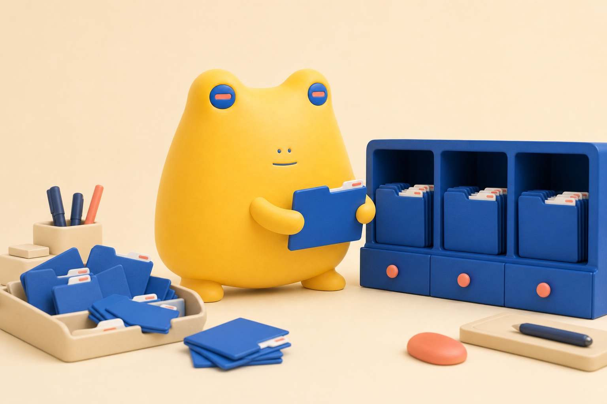
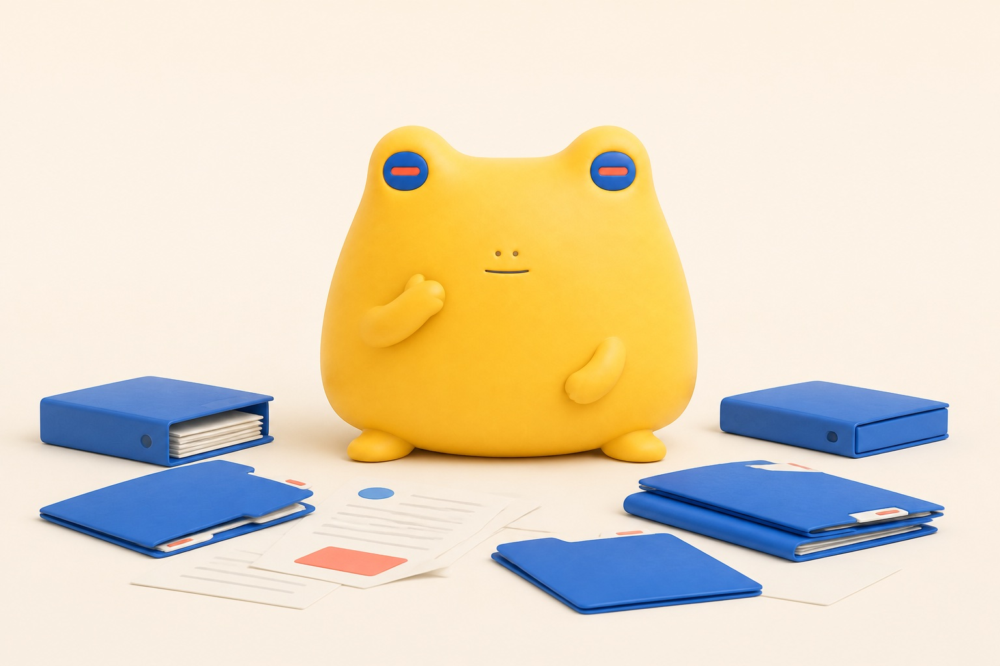
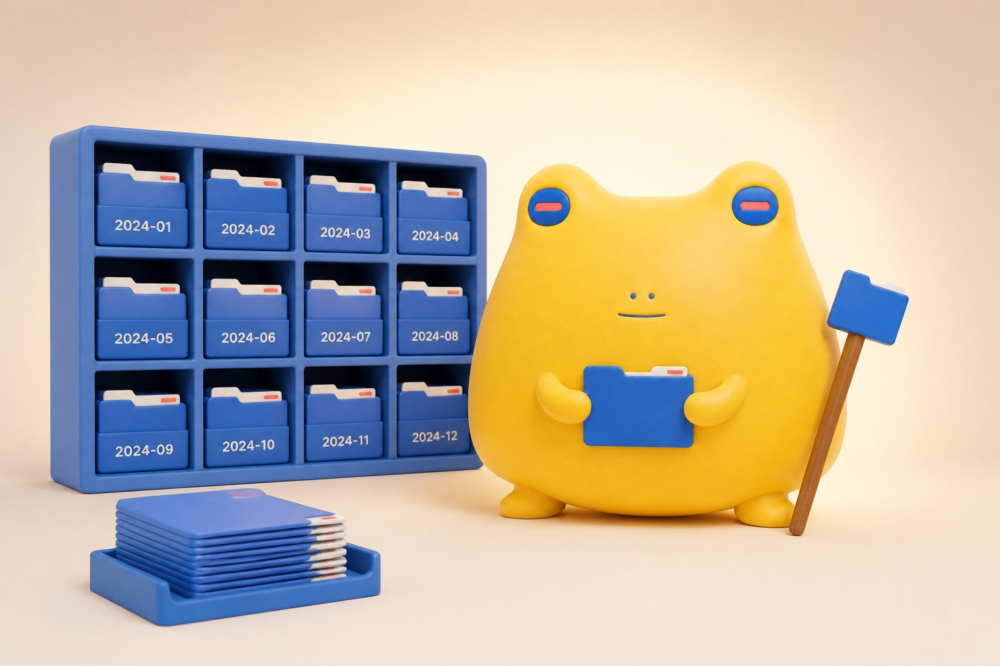

整理前 · Desktop
东西都有用，
只是挤在了一起。
- report.pdf
- Client Handoff
- Meeting Recording.mp4
- Reference Photos
- ~unfinished.tmp
macOS Desktop Organizer
Froganize 是一款本地优先的 Mac 桌面整理工具。打开它，点一下 “收好桌面”，安全的顶层文件和完整文件夹就会按最后修改年月进入 Timeline。
Source Beta · 完整源码已在 GitHub 公开

Before → After
Froganize 只查看桌面最外层。点击“收好桌面”后，它会把本次计划中的 安全文件和完整文件夹一次收好；隐藏项、临时项和符号链接继续留在原处。
整理前 · Desktop
整理后 · Timeline
~unfinished.tmp 属于临时项，会安全留在桌面并报告原因。
st_mtime，文件夹使用可读树中最新时间。One click, one safe batch
进入产品后，故事里的蛙仔变成清晰的矢量伙伴， 用不同姿态告诉你现在处于哪一步。
Open
Collect
Timeline
Timeline/YYYY/YYYY-MM/。
Calendar & Undo
Real local interface
主界面只留一个“收好桌面”动作，侧栏用来回看整理日历和管理可选的截图智能。 没有账号，普通桌面整理也不需要 API Key 或网络。

Optional Screenshot Intelligence
截图智能是一个独立、默认关闭的实验功能。它只处理你授权目录中 可安全识别的系统截图，请你自己配置兼容的 AI 接口，再把含糊的 时间名称换成有意义的标题。
Screenshot 2026-09-16 at 10.24.18.png
时间很准确，内容却看不出来项目路线图-文件整理流程.png
原图不改内容，只安全更换文件名只授权一个明确目录，不扫描整台 Mac。
填写 HTTPS 接口、模型名和 API Key；密钥存入 macOS Keychain。
接受上传说明后才会启用，也可只手动处理最新一张。
成功改名会写入本地历史，需要时可撤销最近一次截图改名。
The important boundary
AI 只返回标题、摘要、类别、置信度和敏感标记。本地安全层再次确认 文件没有被修改，清理不安全字符、处理重名，并以不覆盖方式完成改名。

Local First, by design
Froganize 少知道一点，也少替你决定一点。 这是它值得信任的方式，不是藏在设置里的选项。
How the magic began
它只是慢慢明白：整理不是让东西消失， 而是给每一件暂时不用的东西，留一个找得回来的去处。

蛙仔试过把文件堆高，也试过假装看不见。 可每一份都像还有用，桌面越挤，它反而越不敢动。
有一天，它捡到一根文件夹形状的魔法杖。 杖没有让文件凭空消失，只让“留下”和“收好”第一次变得清楚。
蛙仔学会先查看安全边界和最后修改时间。 主人点一下魔法杖，它就把安全的顶层项目一次收好，不安全的继续留在原处。

收好的项目进入按年月排列的 Timeline，仍然找得到，也可以在整理日历中回看。 桌面不必空空如也，只需要重新留给此刻正在发生的事。
From story to product
故事里的魔法，在产品里是一次安全的点击。
走进真实界面，蛙仔会换成更克制、更清晰的矢量形象。 打开、收好、回顾和撤销，每种姿态都对应一个真实动作。
Open-source macOS beta
Froganize 已能在本机完成一键桌面整理、月度 Timeline、整理日历和安全撤销。 首个公开版本以可审阅、可测试、可从源码运行为目标，不把未公证的本地安装包伪装成正式发行版。
官网域名为 froganize.com，源码唯一公开地址是 github.com/liwengtai-sudo/Froganize。当前不提供未签名、未公证的安装包。